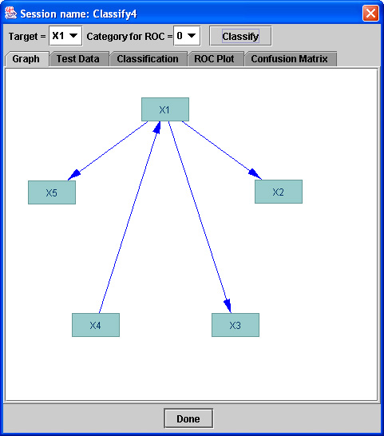

A Classify box in the main workspace looks like this:

The operations in the Classify box permit you to use an instantiated model to
estimate values for a variable from a data set--the variable estimated
must be in the Instantiated Model, but it need not be in the data set.
A Classify Box requires input from a Data box containing data and input from
an Instantiated Model in an IM box. (Remember that you can copy an estimated
model in an Estimate box into an IM box simply by putting a flowchart arrow
fromthe estimate box to a new IM box.)
Here are some things to note:
- The Instantiated Model can contain variables that are not in the Data
- The Data can contain variables that are not in the Instantiated Model
- The variable values must all be categorical--a data file with decimal numbers
will not be accepted by Classify
- The IM must be a Bayes net--either Maximum Likelihood or Dirichlet..
- If the target variable to be classified has multiple values, the Classifier
will assign the target variable its most probable value for each case.
- If the target variable to be classified has two values, you can specify
the cut-off probability for classification.
The Classifier box will show the graph of the IM used for
classification..

The original data can be viewed by cliicking the "Test Data" tab.
Tabs above the graph give choices for how the Classifer will work. You can choose:
- The variable in the IM that is the target--to be classified (you can
also chose this variable by clicking on it in the graph.)
- If the target is binary, with only two possible values, you can choose the
cut-off value below which the variable will be classfied one way, and above
which, the other.
When you hit the "Classify" button at the top of the graph window inside the Classify
box, the Classifier does its work and gives you some viewing choices.

According to which tab you then click, you can see:
- The original data
- The orginal data plus, in the first column, for each case the value of the
target variable the classifier predicts.
If the target variable is included in the data,
the tabs at the top of the Classifier window after the classfication program has
run will also give you.
- A Receiver Operating Characteristic, or ROC curve for short. There is a
distinct ROC curve for each value of the target variable, showing the ratio
of true positives to false positives as a function of the cutoff value of
probabilities for positive classification. ROC curves are traditionally used
only with binary variables but the program allows them for muliptle valued
variables.
- The Area Under the ROC curve, or AUC
- A Confusion Matrix, showiing, for each value of the target variable, the
number of cases having that true value that were predicted (by the classifier)
to have each of the possible values of the target variable.
You do not need to leave the Classify Box, or destroy its contents, to
view the ROC curves or Confusion matrices for alternative values of the
target variable. You do need to do so (or create a new Classify Box) if
you want to classify a different target.